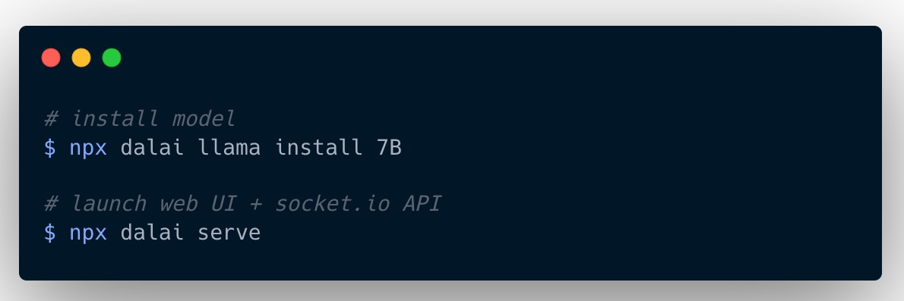
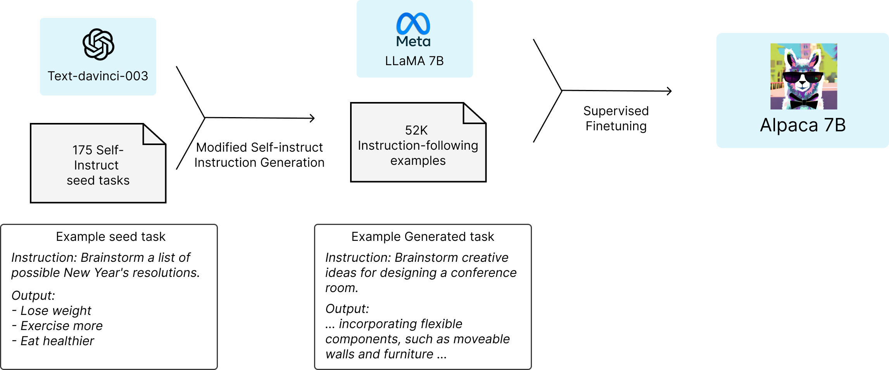

部署属于自己的ChatGPT的三种方式
王福强
什么？ 时至今日你还不知道ChatGPT是啥？ 好吧，那也没关系，毕竟，OpenAI把大陆和香港都给封禁了（或者说没有开放服务），现在很多人也只是通过各种奇技淫巧才能用得上，没听说过也情有可原：）
假如你很想体验一下ChatGPT，却又不知道怎么打通道、建账号甚至让它Take your money，那也可以考虑自己建一套（build your own self-hosted chatgpt），今天，扶墙老师就为大家介绍三种自己搭建自用ChatGPT的方法…
LLaMA
LLaMA 1是Meta公司（也就是原facebook公司）开源的大语言模型（LLM, Large Language Model），社区在其基础之上搞了个项目，叫dalai 2 ，让我们可以很方便地就可以进行本地化部署，没有高端GPU也没关系，普通笔记本都能跑：

甚至于还有人搞了个项目叫alpaca-lora 3，让你在树莓派上都能跑LLaMA。
但说实话，扶墙老师试过之后，感觉效果上跟真正的ChatGPT还是有些差距的。
好在，我们还有第二种方式…
[!NOTE]
LLaMA一般称之为“美洲鸵”，虽然发音上跟某和尚很相近 -
Alpaca
Alpaca 4是“羊驼”， 它是斯坦福大学在LLaMA模型基础上结合175个指令任务（instruction tasks）做fine-tuning训练出来的大语言模型：

效果上要比LLaMA好很多，但，你懂得，人家是英文语料…
自己部署倒也是简单，开源社区就是这么强大， 有人搞了个alpaca.cpp 5， 单机跑，一点儿问题没有。
ChatGLM
ChatGLM 6是清华大学搞的中英文双语模型，如果说前面都是英文语系的优化，那么ChatGLM则是侧重于针对中文预料的训练，在本机跑个低配版本，内存只要6G就可以了。
对于中文场景的自部署大语言模型，ChatGLM绝对值得一试啊！
后话
当然，要说效果，其实上面三种模型都不如ChatGPT，就算是Google新出的Bard，据说也是差强人意，所以，有条件，还是推荐大家首选ChatGPT，实在被卡脖子了，那自己尝试部署一个属于自己的大语言模型，也是一种不错的选择。
GL & HF
Updated@2023-04-24:
类似GPT4多模特能力的新模型LLaVA发布，全称Large Language and Vision Assistant，是由威斯康星大学麦迪逊分校、微软研究院和哥伦比亚大学研究者共同发布的多模态大模型。 反正你记着，只要是看图说话类的，现在都是(X)LIP做基础，然后配合LLM生成自然语言内容。
「为AI疯狂」星球上，扶墙老师正在和朋友们讨论有趣的AI话题，你要不要⼀起来呀？^-^
这里
- 不但有及时新鲜的AI资讯和深度探讨
- 还分享AI工具、产品方法和商业机会
- 更有体系化精品付费内容等着你，加入星球(https://t.zsxq.com/0dI3ZA0sL) 即可免费领取。(加入之后一定记得看置顶消息呀！)

存量的时代，省钱就是赚钱。
在增量的时代，省钱其实是亏钱。
避坑儿是省钱的一种形式，更是真正聪明人的选择！
弯路虽然也是路，但还是能少走就少走，背后都是高昂的试错成本。
订阅「福报」，少踩坑，少走弯路，多走一步，就是不一样的胜率！